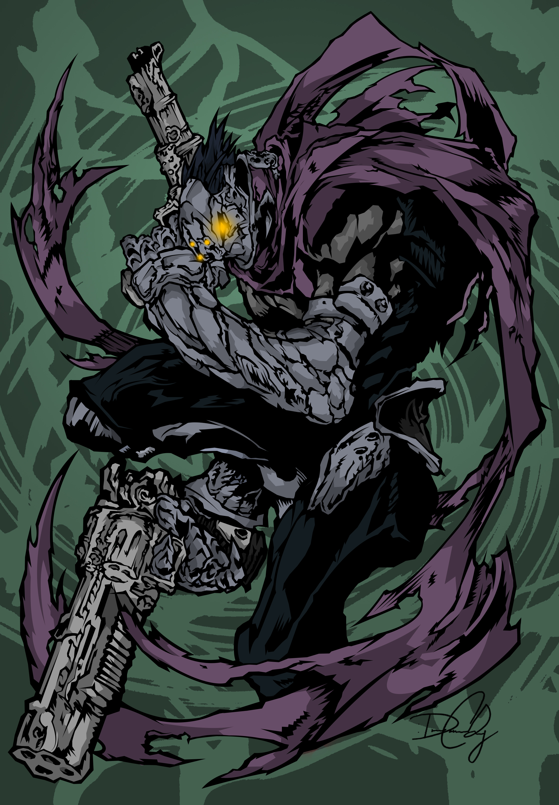

|  | BIOGRAFIA |
|---|---|
|
Strife é um dos Quatro Cavaleiros do Apocalipse e o mais descontraído e sarcástico do grupo.
Ao contrário de Guerra e Morte, ele prefere manter distância dos inimigos,
gindo como atirador preciso e cheio de atitude.
Mesmo brincalhão, Strife possui forte senso de justiça e sempre luta para manter o equilíbrio entre Céu,
Inferno e a Humanidade.
Ele é leal aos irmãos e está sempre pronto para uma missão, mesmo que reclame no processo. | |
| ARMAS | |
|
Mercy: Pistola de precisão. Simboliza técnica, velocidade e foco. Redemption: Pistola poderosa com maior impacto. Representa força e agressividade à distância. Máscara de Cavaleiro: Seu visual icônico. Mostra seu papel como Cavaleiro do Apocalipse. | |
| Habilidades | |
|
Tiro Perfeito: Atirador extremamente preciso e rápido. Agilidade Acrobática: Movimentos rápidos, esquivas e saltos eficientes. Espírito Rebelde: Mente livre, criativa e imprevisível, tornando-o difícil de enfrentar. |